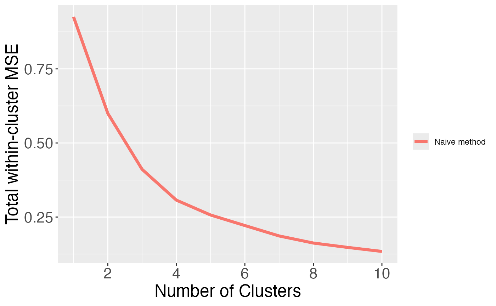
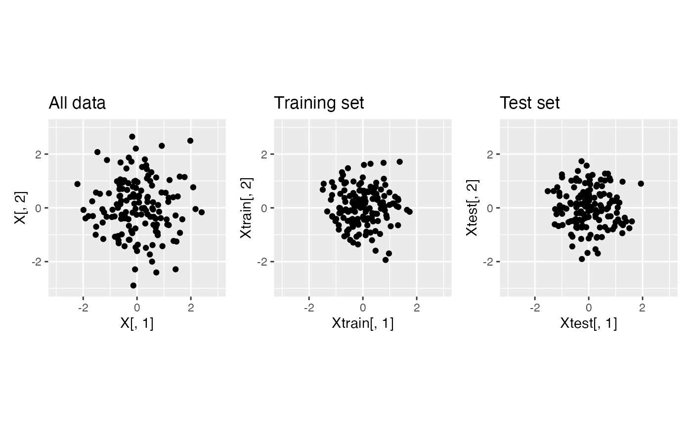
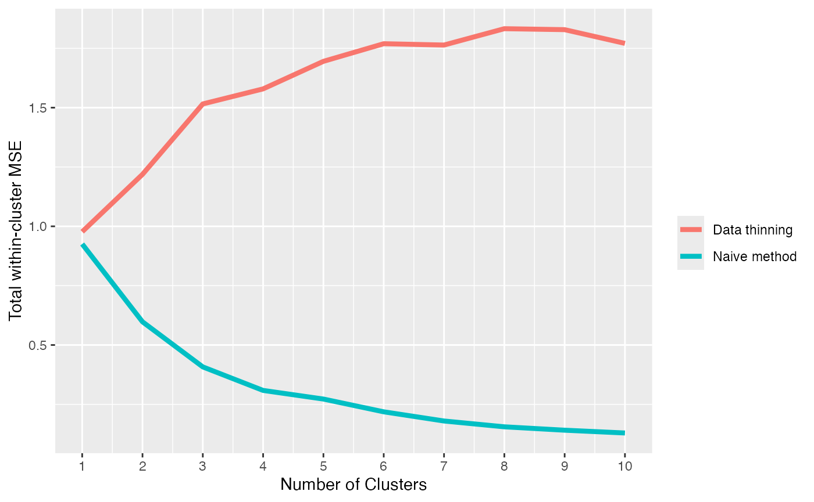
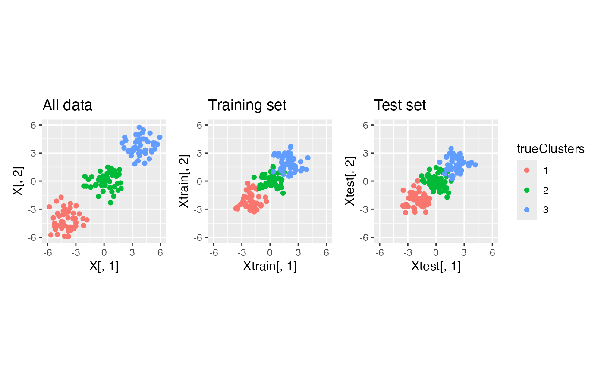
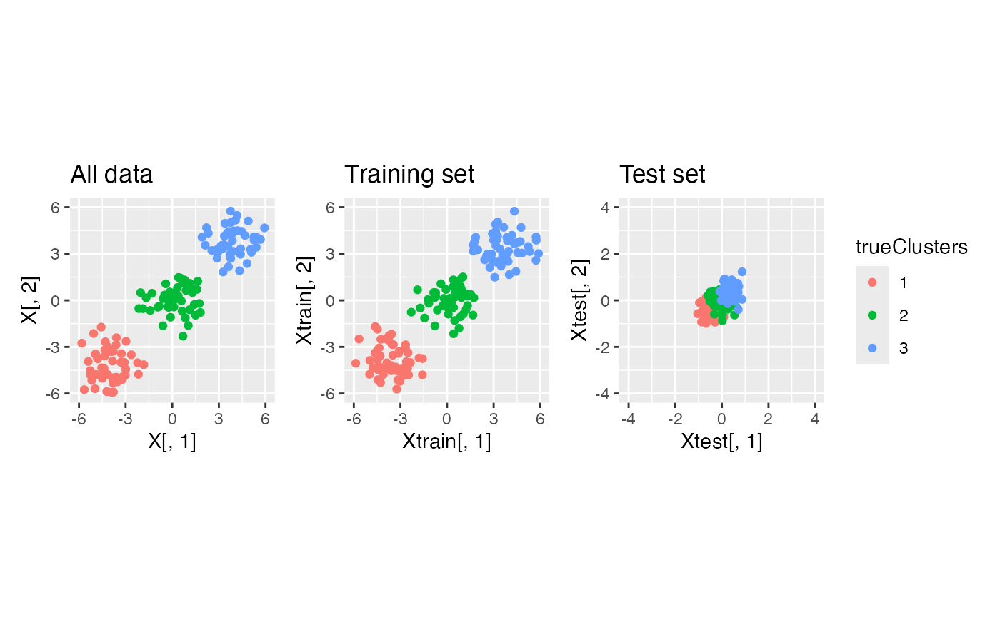

Unsupervised learning tutorial
Source:vignettes/unsupervised_tutorial.Rmd
unsupervised_tutorial.RmdWelcome to the datathin package. In this tutorial, we will show how to use data thinning for model evaluation in the context of unsupervised learning. For more information, see our preprint.
Before getting started with this tutorial, we recommend that you read our introductory tutorial. You also should ensure that the package is installed and loaded. We will also be using the packages ggplot2 and patchwork, so those should also be installed and loaded.
Data with one true cluster
We generate \(X_{ij} \sim N(0,1)\) for \(i=1,\ldots, 150\) and \(j=1,2\). This data has just one true cluster, since all observations come from the same distribution. The code below generates the data and plots the data.
set.seed(1)
n <- 150
p <- 2
X<- matrix(rnorm(n*p, mean=0, sd=1), ncol=p)
ggplot(data=NULL, aes(x=X[,1], y=X[,2]))+geom_point()+coord_fixed()+ggtitle("All data")In this tutorial, we assume that we do not know how many true clusters this data has. We want to compare models with 1,2,3, etc. clusters to see which one provides the best fit to the data. Here, we will define “best fit” as the model that leads to the lowest within-cluster mean squared error (MSE).
The naive method
As a first step, we might try using the “naive” method. This involves estimating the clusters and computing the within-cluster MSE on the same data. We first write the following function, which is designed to return the within-cluster MSE.
cluster.mse.naive <- function(dat, clusterlabs) {
totSS <- 0
for (lab in unique(clusterlabs)) {
clustdat <- dat[clusterlabs==lab,, drop='F']
meanvec <- colMeans(dat[clusterlabs==lab,, drop='F'])
ss <- apply(clustdat, 1, function(u) sum((u-meanvec)^2))
totSS <- totSS+sum(ss)
}
return(totSS/length(dat))
}We now compare the within-cluster MSE of a model with 1 cluster to the within-cluster MSE of a model with 3 clusters. We estimate three clusters using k-means.
one.cluster <- as.factor(rep(1,n))
three.clusters <- as.factor(kmeans(X, centers=3)$cluster)
mse.1 <- cluster.mse.naive(X, one.cluster)
mse.3 <- cluster.mse.naive(X, three.clusters)
p1 <- ggplot(data=NULL, aes(x=X[,1], y=X[,2], col=one.cluster))+geom_point()+
coord_fixed()+ggtitle("All data, 1 cluster", round(mse.1,3))
p3 <- ggplot(data=NULL, aes(x=X[,1], y=X[,2], col=three.clusters))+geom_point()+coord_fixed()+ggtitle("All data, 3 clusters", round(mse.3,3))
p1+p3Even though this data only has one true cluster, when we use this “naive” method, the model with three clusters has a lower within-cluster MSE due to overfitting. In fact, as shown in the plot below, the within-cluster MSE is monotone decreasing in the number of clusters that we estimate. This motivates the need for data thinning.
clusters.full <- sapply(1:10, function(u) kmeans(X, centers= u)$cluster)
results.naive <- apply(clusters.full, 2, function(u) cluster.mse.naive(X, u))
ggplot(data = NULL)+
geom_line(aes(x=1:10, y=results.naive, col="Naive method"), lwd=1.5)+
theme(axis.text = element_text(size=16), axis.title = element_text(size=18))+
scale_x_continuous(breaks=seq(0,10,by=2))+
xlab("Number of Clusters") + ylab("Total within-cluster MSE")+labs(col="")
We quickly note that sample splitting is not an option here, as explained in detail in Gao, Bien, and Witten (2020).
Data thinning
Using the same dataset as above, we now apply data thinning. We call the function datathin with family="normal". For simplicity, we assume that the noise variance \(\sigma^2\) is known.
X.thin <- datathin(X, family="normal", epsilon=0.5, arg=1)
Xtrain <- X.thin$Xtr
Xtest <- X.thin$Xte
p1 <- ggplot(data=NULL, aes(x=X[,1], y=X[,2]))+geom_point()+
xlim(c(-3,3))+ylim(c(-3,3))+
coord_fixed()+ggtitle("All data")
p2 <- ggplot(data=NULL, aes(x=Xtrain[,1], y=Xtrain[,2]))+geom_point()+
xlim(c(-3,3))+ylim(c(-3,3))+
coord_fixed()+ggtitle("Training set")
p3 <- ggplot(data=NULL, aes(x=Xtest[,1], y=Xtest[,2]))+geom_point()+
xlim(c(-3,3))+ylim(c(-3,3))+
coord_fixed()+ggtitle("Test set")
p1+p2+p3
Note that if we cluster the training set and apply those labels to the test set, our within-cluster MSE estimated on the test set will begin to increase when the estimated clusters begin to overfit to the training data.
cluster.train <- as.factor(kmeans(Xtrain, centers=3)$cluster)
p2 <- ggplot(data=NULL, aes(x=Xtrain[,1], y=Xtrain[,2], col=cluster.train))+geom_point()+
xlim(c(-3,3))+ylim(c(-3,3))+
coord_fixed()+ggtitle("Training set")
p3 <- ggplot(data=NULL, aes(x=Xtest[,1], y=Xtest[,2], col=cluster.train))+geom_point()+
xlim(c(-3,3))+ylim(c(-3,3))+
coord_fixed()+ggtitle("Test set")
p2+p3+plot_layout(guides="collect")
This will result in a test set MSE curve that is not monotone decreasing. We first need to write a data thinning within-cluster MSE function. Note that this function needs access to the training data (for computing cluster means) and the test data (for computing the deviations around these cluster means).
cluster.mse.datathin <- function(dat.train, dat.test, clusterlabs) {
totSS <- 0
for (lab in unique(clusterlabs)) {
clustdat.test <- dat.test[clusterlabs==lab,, drop='F']
meanvec <- colMeans(dat.train[clusterlabs==lab,, drop='F'])
ss <- apply(clustdat.test, 1, function(u) sum((u-meanvec)^2))
totSS <- totSS+sum(ss)
}
return(totSS/length(dat.test))
}We can now apply it to our data. To put the MSE from the naive method and the MSE from data thinning on the same scale, we can multiply the data thinning MSE by \(1/\epsilon\), where \(\epsilon = 0.5\).
clusters.full <- sapply(1:10, function(u) kmeans(X, centers= u)$cluster)
results.naive <- apply(clusters.full, 2, function(u) cluster.mse.naive(X, u))
clusters.train <- sapply(1:10, function(u) kmeans(Xtrain, centers= u)$cluster)
results.datathin <- apply( clusters.train, 2, function(u) cluster.mse.datathin(Xtrain,Xtest, u))
eps = 0.5
ggplot(data = NULL)+
geom_line(aes(x=1:10, y=results.naive, col="Naive method"), lwd=1.5)+
geom_line(aes(x=1:10, y=results.datathin/eps, col="Data thinning"), lwd=1.5)+
scale_x_continuous(breaks=seq(0,10,by=1))+
xlab("Number of Clusters") + ylab("Total within-cluster MSE")+labs(col="")
The within-cluster MSE obtained using data thinning is minimized at 1 cluster. Thus, we say that data thinning correctly selects the true number of clusters.
Data with three true clusters
We now study the performance of the naive method and of data thinning when there are three true clusters in this dataset. To start, we generate data with \(n=150\) and \(p=2\) and \(3\) true clusters. We plot this data.
p <- 2
n <- 150
trueClusters <- as.factor(rep(c(1,2,3), each=n/3))
X <- rbind(
matrix(rnorm(n/3*p, -4,1), ncol=p),
matrix(rnorm(n/3*p, 0,1), ncol=p),
matrix(rnorm(n/3*p, 4,1), ncol=p)
)
ggplot(data=NULL, aes(x=X[,1], y=X[,2], col=trueClusters))+geom_point()We first visualize what happens to this data under data thinning.
X.thin <- datathin(X, family="normal", epsilon=0.5, arg=1)
Xtrain <- X.thin$Xtr
Xtest <- X.thin$Xte
p1 <- ggplot(data=NULL, aes(x=X[,1], y=X[,2], col=trueClusters))+geom_point()+
xlim(c(-6,6))+ylim(c(-6,6))+
coord_fixed()+ggtitle("All data")
p2 <- ggplot(data=NULL, aes(x=Xtrain[,1], y=Xtrain[,2], col=trueClusters))+geom_point()+
xlim(c(-6,6))+ylim(c(-6,6))+
coord_fixed()+ggtitle("Training set")
p3 <- ggplot(data=NULL, aes(x=Xtest[,1], y=Xtest[,2], col=trueClusters))+geom_point()+
xlim(c(-6,6))+ylim(c(-6,6))+
coord_fixed()+ggtitle("Test set")
p1+p2+p3+plot_layout(guides="collect")
We see that data thinning preserves the true clusters, since it simply scales the mean of the observations by a known constant.
We now compare the within-cluster MSE curves of the naive method and data thinning.
clusters.full <- sapply(1:10, function(u) kmeans(X, centers= u)$cluster)
results.naive <- apply(clusters.full, 2, function(u) cluster.mse.naive(X, u))
clusters.train <- sapply(1:10, function(u) kmeans(Xtrain, centers= u)$cluster)
results.datathin <- apply( clusters.train, 2, function(u) cluster.mse.datathin(Xtrain,Xtest, u))
eps = 0.5
ggplot(data = NULL)+
geom_line(aes(x=1:10, y=results.naive, col="Naive method"), lwd=1.5)+
geom_line(aes(x=1:10, y=results.datathin/eps, col="Data thinning"), lwd=1.5)+
scale_x_continuous(breaks=seq(0,10,by=1))+
xlab("Number of Clusters") + ylab("Total within-cluster MSE")We see that data thinning minimizes the MSE at \(3\), which is the true number of clusters. Thus, data thinning provides a principled way to select the true number of clusters. With the naive method, we must resort to looking for an “elbow” in this MSE plot, which is much more heuristic.
Alternate choices of epsilon
Our function for computing the within-cluster MSE of data thinning must be updated if the parameter \(\epsilon\) used in data thinning is not \(0.5\). We write an updated function that allows for an arbitrary choice of \(\epsilon\) below.
cluster.mse.datathin <- function(dat.train, dat.test, clusterlabs, eps=0.5) {
totSS <- 0
for (lab in unique(clusterlabs)) {
clustdat.test <- dat.test[clusterlabs==lab,, drop='F']
meanvec <- (1-eps)/(eps)*colMeans(dat.train[clusterlabs==lab,, drop='F'])
ss <- apply(clustdat.test, 1, function(u) sum((u-meanvec)^2))
totSS <- totSS+sum(ss)
}
return(totSS/length(dat.test))
}The difference between this function and the one used above is that we scale the estimated mean for each cluster by \((1-\epsilon)/\epsilon\). This turns an estimate of \(E[X^{train}] = \epsilon E[X]\) into an esitmate of \(X[X^{test}] = (1-\epsilon) E[X]\). We now show that this function works in practice if we data-thin with \(\epsilon = 0.9\).
X.thin <- datathin(X, family="normal", epsilon=0.9, arg=1)
Xtrain <- X.thin$Xtr
Xtest <- X.thin$Xte
p1 <- ggplot(data=NULL, aes(x=X[,1], y=X[,2], col=trueClusters))+geom_point()+
xlim(c(-6,6))+ylim(c(-6,6))+
coord_fixed()+ggtitle("All data")
p2 <- ggplot(data=NULL, aes(x=Xtrain[,1], y=Xtrain[,2], col=trueClusters))+geom_point()+
xlim(c(-6,6))+ylim(c(-6,6))+
coord_fixed()+ggtitle("Training set")
p3 <- ggplot(data=NULL, aes(x=Xtest[,1], y=Xtest[,2], col=trueClusters))+geom_point()+
xlim(c(-4,4))+ylim(c(-4,4))+
coord_fixed()+ggtitle("Test set")
p1+p2+p3+plot_layout(guides="collect")
We see that this choice of \(\epsilon\) leaves less information in the test set. Nevertheless, when we make an MSE curve, we see that we still correctly identify 3 clusters as the minimum MSE.
eps=0.9
clusters.train <- sapply(1:10, function(u) kmeans(Xtrain, centers= u)$cluster)
results.datathin <- apply( clusters.train, 2, function(u) cluster.mse.datathin(Xtrain,Xtest, u, eps))
ggplot(data = NULL)+
geom_line(aes(x=1:10, y=results.datathin, col="Data thinning"), lwd=1.5)+
scale_x_continuous(breaks=seq(0,10,by=1))+
xlab("Number of Clusters") + ylab("Total within-cluster MSE")In general, the choice of epsilon that best balances the two competing needs of leaving enough information in the training set for accurate cluster estimation and estimation of MSE in the test set depends on the application.
Data thinning with multiple folds.
Finally, we show how to repeat the above analysis with multiple folds using the multithin function.
nFolds <- 10
X.multithin <- multithin(X, family="normal", nfolds=nFolds, arg=1)
totalMSEs <- matrix(NA, nrow=nFolds, ncol=10)
for (fold in 1:nFolds) {
Xtest <- X.multithin[[fold]]
Xtrain <- X-Xtest
clusters.train <- sapply(1:10, function(u) kmeans(Xtrain, centers= u)$cluster)
totalMSEs[fold,] <- apply( clusters.train, 2, function(u) cluster.mse.datathin(Xtrain,Xtest, u, (nFolds-1)/nFolds))
}
averagedMSEs <- apply(totalMSEs, 2, mean)
ggplot(data = NULL)+
geom_line(aes(x=1:10, y=results.datathin, col="Data thinning, eps=0.9"), lwd=1.5)+
geom_line(aes(x=1:10, y=averagedMSEs, col="Multi thinning, 10 folds"), lwd=1.5)+
scale_x_continuous(breaks=seq(0,10,by=1))+
xlab("Number of Clusters") + ylab("Total within-cluster MSE")We see that, by averaging over multiple folds, we reduce the noise associated with our test set MSE and we get a more clearly defined minimum MSE at the true number of clusters.
Alternate distributions
The code in this tutorial can be seamlessly updated to handle data that comes from a different distribution. We simply need to update the family argument in our calls to the datathin or multithin functions. Please see our introductory tutorial for a comprehensive list of the distributions that are available.
Alternate unsupervised learning models
Instead of estimating the number of clusters, we might wish to perform an analysis where we estimate the rank of a matrix (e.g. estimate the number of principal components that should be retained for further analysis). We will give an example of the principal components task in a future tutorial.